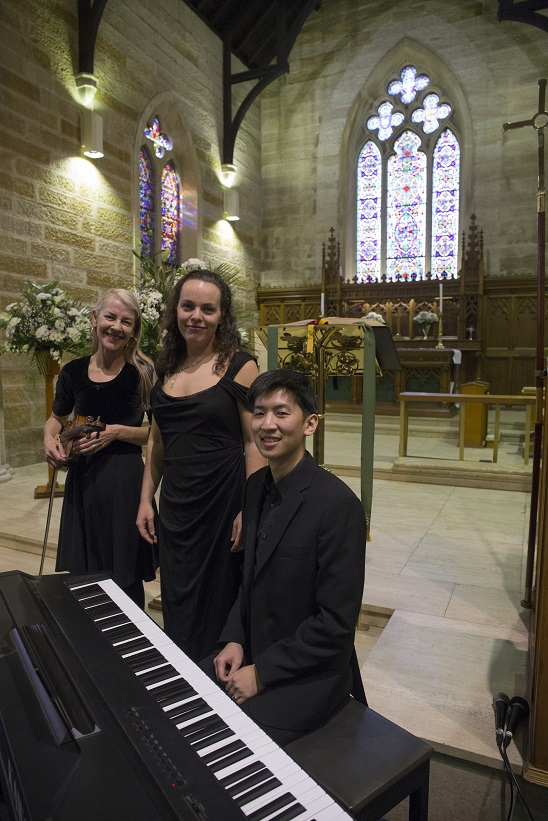

Email natalie@natalieclaire.com.au or text 0415 796 095 for an immediate response.
We are available to perform most days of the week.
I am a professional Sydney funeral singer and church singer. My funeral musicians and I perform in Sydney, Wollongong and surrounding areas.
I understand how emotional arranging music for a loved one can be. Each funeral is very personal to me and I will do my utmost to support you during this difficult time.
I have a large network of outstanding Sydney funeral musicians who I can provide to play the accompaniment. We are experienced and have the particular performance skills necessary to facilitate a seamless funeral service. We have a special type of understanding that can only come with experience.
I can guide you through the service with sensitivity and help you to choose music that is appropriate for the memorial service. We have a large repertoire of funeral music or can perform a special song, chosen by you and your family to reflect the life of your loved one. I ensure that the musical ambiance I create is unobtrusive and honors the memory of those who have passed.
Email natalie@natalieclaire.com.au or text 0415 796 095 for an immediate response.